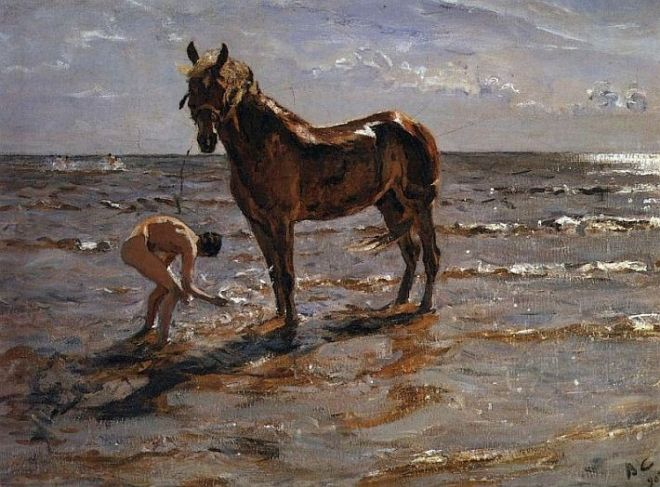
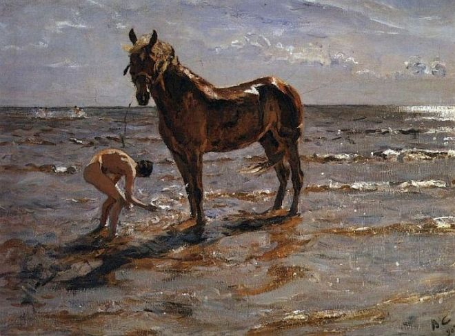

Всё о живописи
- Пейзаж. Жанр используют для изображения живой природы.
- Марина. Предполагает написания морских пейзажей.
- Портрет. Жанр предназначен для рисования одного или нескольких человек с детальной точностью.
- Бытовой. Задача направления показать особенности личной и общественной жизни человека, социальные проблемы, быт.
- Натюрморт. Предназначен для изображения неживых предметов. На полотнах рисуют фрукты, цветы, посуду и другие предметы обихода.
- Исторический. На холсте пишут события, которые происходят в настоящем или были в прошлом и имеют социальную значимость.
- Батальный. Позволяет запечатлеть на полотне сражения на суше или в море.
- Архитектурный. Жанр используют для изображения архитектуры (городские пейзажи, отдельные здания и сооружения, интерьеры дворцов).
- Анималистика. Основные герои полотен – домашние или дикие животные, птицы, ящерицы, насекомые.
- Ню. Предназначен для восхваления красоты обнаженного тела.

 
